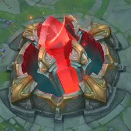
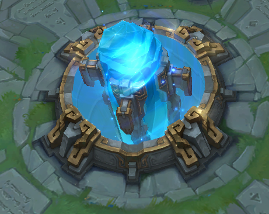

Summoner's Rift

Summoner's Rift, o maior mapa de League of Legends, é espelhado diagonalmente e dispõe de três rotas que vão em direção à base inimiga. Cada rota é defendida por três torres e um inibidor enquanto o nexus é protegido por um par de torres. Ambos os lados do mapa têm uma selva grande que proporciona efeitos poderosos. O rio central é o lar de dois monstros-chefe e do Aronguejo, que dá benefícios a ambas as equipes.
 O objetivo do Rift de Invocador é simples - destrua o nexus do inimigo. Para fazer isso, os campeões devem percorrer um dos três diferentes caminhos para atacar seu inimigo nos pontos mais fracos que podem explorar. Ambas as equipes têm suas rotas defendidas por numerosas torres. Cada torre aumenta a força quanto mais próximo ela chega ao seu respectivo nexus e cada torre deve ser eliminada para obter acesso à próxima torre nessa faixa. Cooperar com companheiros invocadores é um requisito absoluto para o sucesso, pois é fácil para um campeão se ver emboscado por inimigos nas rotas do Rift.